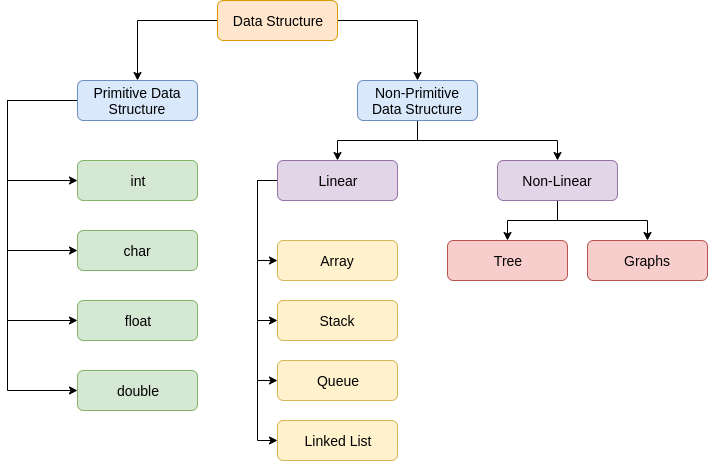
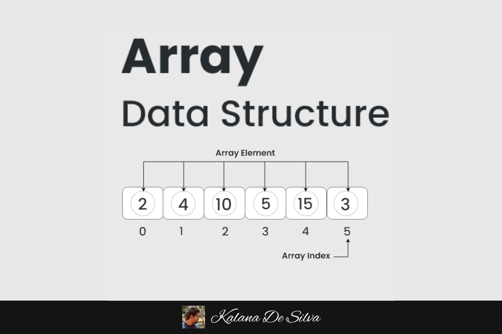
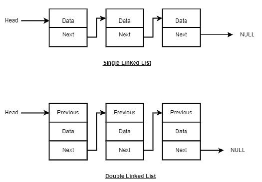

Data structures are specialized formats for organizing, storing, and manipulating data efficiently. They provide a way to manage large amounts of data for various applications, and the right data structure can significantly impact program performance.

Why Data Structures Matter
Data structures are fundamental to computing because they:
Improve efficiency: Different data structures offer different time and space trade-offs for operations
Organize data logically: Making it easier to understand and manipulate
Enable complex operations: Supporting specialized algorithms and data manipulations
Scale with data volume: Many data structures are designed to handle large datasets efficiently
Types of Data Structures
Data structures are commonly classified as:
Classification
Description
Examples
Linear
Elements arranged in sequential order
Arrays, Linked Lists, Stacks, Queues
Non-Linear
Elements not arranged sequentially
Trees, Graphs
Homogeneous
All elements have the same data type
Arrays (in most languages)
Heterogeneous
Elements can have different data types
Structures/Records
Static
Fixed size, allocated at compile time
Arrays in C
Dynamic
Size can change during execution
Linked Lists, Dynamic Arrays
Linear Data Structures
Linear data structures arrange data elements sequentially, where each element has a predecessor and successor (except the first and last elements).
1. Arrays
Arrays are the simplest and most widely used data structure. They store elements of the same type in contiguous memory locations.

Key Characteristics:
Random access: Elements can be accessed directly using an index (O(1) time)
Fixed size: In many languages, arrays have a fixed size upon creation
Homogeneous: All elements must be of the same data type
Memory efficient: Contiguous allocation with minimal overhead
Array Operations:
// Array operations (pseudocode)
function accessElement(array, index):
return array[index] // O(1) time complexity
function searchElement(array, value):
for i from 0 to array.length - 1:
if array[i] == value:
return i
return -1 // Not found, O(n) time complexity
2. Linked Lists
Linked lists are a dynamic data structure where elements (nodes) are stored at non-contiguous memory locations and connected through references.

Types of Linked Lists:
Singly Linked List: Each node points to the next node
Doubly Linked List: Each node points to both next and previous nodes
Circular Linked List: Last node points back to the first node
Key Characteristics:
Dynamic size: Can grow or shrink during execution
Efficient insertions/deletions: No need to shift elements
Sequential access: Must traverse from the beginning to access elements
Extra memory: Requires additional memory for pointers/references
Linked List Operations:
// Linked List Node (pseudocode)
class Node:
data
next = null
// Insertion at the beginning
function insertAtBeginning(head, value):
newNode = new Node()
newNode.data = value
newNode.next = head
return newNode // New head of the list, O(1) time complexity
// Traversal
function traverseList(head):
current = head
while current != null:
print(current.data)
current = current.next
// O(n) time complexity
3. Stacks and Queues
Stacks and queues are abstract data types that can be implemented using arrays or linked lists.
Stack (LIFO - Last In, First Out)
A stack follows the principle of "last in, first out" - like a stack of plates.
// Stack operations (pseudocode)
function push(stack, value):
stack[top] = value
top = top + 1
function pop(stack):
if isEmpty(stack):
return "Stack Underflow"
top = top - 1
return stack[top]
function peek(stack):
return stack[top - 1]
Queue (FIFO - First In, First Out)
A queue follows the principle of "first in, first out" - like people waiting in line.
// Queue operations (pseudocode)
function enqueue(queue, value):
queue[rear] = value
rear = rear + 1
function dequeue(queue):
if isEmpty(queue):
return "Queue Underflow"
value = queue[front]
front = front + 1
return value
Non-Linear Data Structures
Non-linear data structures don't arrange data in a sequential manner. Instead, they organize data in a hierarchical or network-like structure, allowing more complex relationships between elements.
1. Trees
Trees are hierarchical structures consisting of nodes connected by edges. Each tree has a root node, and every node can have zero or more child nodes.
Key Terminology:
Root: The topmost node of the tree
Parent/Child: Relationship between connected nodes
Siblings: Nodes that share the same parent
Leaf: A node with no children
Height: The longest path from the root to a leaf
Depth: The distance from a node to the root
Common Types of Trees:
Binary Tree
A tree where each node has at most two children, referred to as left and right children.
Binary Search Tree (BST)
A binary tree with the property that for any node:
All nodes in the left subtree have values less than the node's value
All nodes in the right subtree have values greater than the node's value
// Binary Search Tree operations (pseudocode)
class TreeNode:
value
left = null
right = null
function insert(root, value):
if root is null:
return new TreeNode(value)
if value < root.value:
root.left = insert(root.left, value)
else if value > root.value:
root.right = insert(root.right, value)
return root
function search(root, value):
if root is null or root.value == value:
return root
if value < root.value:
return search(root.left, value)
return search(root.right, value)
Balanced Trees
Trees with additional rules to ensure balance (similar heights for all branches), such as AVL trees and Red-Black trees. These provide consistent O(log n) time for operations.
2. Graphs
Graphs are collections of nodes (vertices) connected by edges. They represent relationships between objects and can model complex real-world networks.
Graph Types:
Directed vs. Undirected: In directed graphs, edges have a direction
Weighted vs. Unweighted: Edges may have associated weights/costs
Connected vs. Disconnected: Whether all nodes can be reached from any node
Cyclic vs. Acyclic: Whether the graph contains cycles
Graph Representations:
Adjacency Matrix: A 2D array where matrix[i][j] indicates an edge between nodes i and j
Adjacency List: An array of lists where each list contains the neighbors of a vertex
Common Graph Algorithms:
Depth-First Search (DFS): Explores as far as possible along each branch before backtracking
Breadth-First Search (BFS): Explores all neighbors at the present depth before moving on